للتطوير الأكاديمي والدعوة الإسلامية والعلاقات الدولية والشؤون الأهلية الخاصة
Sultan Hanafi Royal Schools is in the course of bringing a substantial part of its academic, administrative, communication and student-facing processes into a single institutional environment. That environment is referred to throughout this paper as the Digital Campus.
A considerable part of it has already been established. The requirement that remains is not principally the creation of further pages or features: it is the integration, refinement, hardening and operational stabilisation of the services through which the school will hold its records and run its workflows, credentials and communication.
Two legitimate routes remain open for completing it. This paper sets out both, with the derivation of every figure shown, so that the decision can be taken on the institution’s own grounds.
Two marks are used throughout. In place · under refinement means established on the existing platform, in use or in active refinement. Proposed · subject to approval means a capability direction the platform is designed to admit, which has not been implemented and is not asserted to exist. A row carrying no mark is descriptive. This paper does not assert that any individual item is complete.
Every figure appears with the arithmetic that produces it. The range in Section 08 is a planning envelope, not an invoice, and not an assertion that every session within it will be required. Amounts are in United States dollars.
The rates are structured around the direct operational and engineering requirement associated with the remaining work — its nature, complexity and technical intensity — rather than introducing a separate margin into the stated figures. Section 08 shows the derivation in full; Section 14 sets out what is recharged on actual usage and what is not.
Nothing in this paper commits the school to either route, and neither route is recommended in preference to the other. Section 15 states the position.
The term is used here in a specific sense. It does not mean a collection of digital tools each performing one task. It means a single institutional layer in which the school’s records, workflows and services resolve against one authoritative source.
The practical consequence is that a student exists once. The same record carries enrolment, academic progress, results, credentials and correspondence history. A result approved in the academic workflow is the result a certificate is generated from, and the result a verification enquiry resolves against. An announcement issued to a class is addressed to the roll the academic workflow already maintains.
This is why the engineering effort described below accumulates rather than dissipates. Work on the credential layer did not have to re-establish who the students are; work on communication did not have to re-establish which classes exist. Each completed component becomes part of the ground the next one stands on — and it is also why the work that remains is weighted toward integration and stabilisation rather than toward new features.
| Institutional area | What it covers | Status |
|---|---|---|
| Academic and administrative workflows | Structured digital processes for selected institutional operations. | In place · under refinement |
| Credential infrastructure | Certificate generation, unique references and verification-oriented workflows. | In place · under refinement |
| Communication infrastructure | A central communication layer able to support role-based and targeted institutional communication. | In place · under refinement |
| Management visibility | Structured dashboards and operational views intended to improve institutional awareness. | In place · under refinement |
| Shared Digital Campus foundation | The common environment within which further institutional services can be progressively integrated. | In place · under refinement |
The current development direction has established a substantial digital foundation. The architecture matters more than any individual screen: it allows functions that would otherwise sit in separate systems to be brought progressively into one institutional environment, which reduces fragmentation and gives any future expansion a defined place to attach to.
The remaining work is accordingly concerned with bringing critical components to a stable, integrated and fully operational standard, rather than with establishing the foundation itself. Two parts of that foundation account for a large share of what the school will notice in use, and they are set out next, in Sections 04 and 05, before the remaining engineering requirement is stated.
The objective is not to add more digital functions. It is to establish, progressively, a coherent institutional system in which records, workflows, credentials, communication and selected services operate together under the school’s own digital direction.
The Certificate Generation Room is not a page that produces certificates. It is the credential layer of the Digital Campus: the point at which an institutional record becomes a formal, referenced and verifiable institutional output, and at which the school retains its own record of having issued it.
The distinction is administrative rather than technical. A document generator produces a file. A credential infrastructure produces an issued credential — carrying a unique institutional reference, a verification path, and a retained record against which a later enquiry, whether from a parent, an employer, another institution or the school’s own registry, can be resolved. The second is what allows the school to answer for a document years after issuing it.
The intended lifecycle runs as follows.
The credential infrastructure described here is an institutional capability that can be expanded progressively. The availability of any particular automated or chargeable service within it would depend on its subsequent implementation and on the school’s approved administrative arrangements. Nothing in this section asserts that an extension listed above is in operation.
The Communication Channel is likewise not a chat feature. It is intended as the institution’s communication layer: one place through which the school addresses its constituencies, with the addressing done by institutional role rather than by maintaining a separate contact list for every relationship.
Its significance is that communication resolves against the same records as everything else. A notice to a class, a result notification to a parent, a staff circular and an administrative reply are all addressed from the institutional roll, and all leave a retained communication history. The communication layer itself is established and under refinement; the operating scope below is the direction it is designed to admit, item by item, as each is implemented and approved.
| Operating scope | Institutional purpose | Status |
|---|---|---|
| Administration to student | Direct institutional communication addressed from the student roll. | Proposed · subject to approval |
| Administration to parent or guardian | Communication with the authorised adult recorded against the student. | Proposed · subject to approval |
| Management and staff | Internal circulation to management and to academic and administrative staff. | Proposed · subject to approval |
| Targeted announcements | Communication addressed to a defined group — a class, a year, a programme, a staff function — rather than to everyone. | Proposed · subject to approval |
| Operating scope (continued) | Institutional purpose | Status |
|---|---|---|
| Institutional notices | Controlled distribution of formal notices, with the distribution itself recorded. | Proposed · subject to approval |
| Role-based access | What a user may send, and to whom, determined by their institutional role. | Proposed · subject to approval |
| Communication history | A retained record of what was sent, to whom and when, available to authorised users. | Proposed · subject to approval |
| Integration with other workflows | Communication raised by an academic or administrative process rather than composed separately from it. | Proposed · subject to approval |
The remaining work is expected to centre on nine areas. None of them is the creation of a new subsystem. All of them are the work of making existing subsystems correct, connected, secure and operationally dependable — which is the part of a platform’s development that is least visible from outside it and most consequential in use.
| Engineering area | What the work consists of |
|---|---|
| System and service integration | Connecting the relevant Digital Campus components so that they resolve against one another rather than operating in parallel. |
| MCP configuration and engineering | Configuration and engineering of the model-context tooling used within the development workflow, where the work requires it. |
| Certificate and verification workflows | Refinement and operational validation of the credential lifecycle set out in Section 04. |
| Communication infrastructure | Refinement of the communication layer, and its integration with institutional roles and workflows. |
| Database and workflow refinement | Improving the consistency and operational reliability of the stored records and of the processes that act on them. |
| Permissions and access control | Defining and enforcing what each institutional role may see and may do, across the relevant services. |
| Engineering area (continued) | What the work consists of |
|---|---|
| Security hardening and validation | Hardening, testing and validation to bring the platform to a production-ready standard. |
| Performance and difficult debugging | Performance optimisation, and the diagnosis of faults that cross more than one component. |
| Deployment and documentation | Deployment, documentation and final operational refinement. |
For the remaining work, effort is expressed in engineering sessions rather than in billed hours. The reason is practical. The work listed in Section 06 is not uniform: an afternoon spent tracing a permissions fault across three components and an afternoon spent writing documentation are both an afternoon, and they are not the same piece of engineering. An hourly unit records the duration and discards the distinction.
An engineering session is a defined unit of engineering workload within the continuing development cycle. In practice a session typically occupies about 60 to 120 minutes of continuous work, the longer figure where the task involves integration, configuration, debugging, testing or operational refinement that cannot sensibly be interrupted part-way. A single session may combine implementation, integration, configuration, debugging, testing, validation, security refinement, deployment preparation, documentation and operational stabilisation. What makes it one session is that it completes one unit of work — not that it occupies one hour.
The rate is then set by the character of the work rather than by its duration. Three rates are used.
| Rate | Engineering character | Typical work at this rate |
|---|---|---|
| $25 | Standard engineering | Routine configuration; standard integration; database and workflow refinement; documentation; straightforward testing. |
| $30 | Intermediate engineering | Multi-system integration; permissions and workflow logic; debugging; validation; cross-component refinement. |
| $35 | Advanced and critical engineering | Complex integration; security hardening; production configuration; performance optimisation; difficult debugging; stabilisation of critical workflows. |
The $25, $30 and $35 structure is the engineering service rate applicable to this project. It is not an official Anthropic, MCP or external vendor tariff, and no external vendor’s pricing is asserted anywhere in this paper. What underlying operational resources are consumed during the work, and how they are treated, is a separate matter and is set out in Section 14.
The estimate has two inputs and no others: the volume of sessions that remain, and the mix of rates across them. Both are stated below, and the arithmetic is shown in full so that the range can be checked rather than accepted.
The remaining volume is assessed at approximately 220 to 250 sessions across the nine areas in Section 06. Multiplying each volume by each rate gives the following, in United States dollars.
| Sessions | $25Standard | $30Intermediate | $35Advanced |
|---|---|---|---|
| 220 sessions | $5,500 | $6,600 | $7,700 |
| 235 sessions | $5,875 | $7,050 | $8,225 |
| 250 sessions | $6,250 | $7,500 | $8,750 |
Those two corners are the arithmetic extremes, and neither is expected. $5,500 assumes that 220 sessions prove sufficient and that every one of them is standard work; $8,750 assumes 250 sessions of which every one is advanced or critical. Section 06 contains both documentation and security hardening, so the mix will fall between them.
To show what a realistic middle looks like without presenting it as a forecast:
The range is a transparent planning envelope, not an assertion that every session within it will be required. Allocation should follow the work actually undertaken, at the rate applicable to its character; the blended figure above is shown to make the interior of the range legible, not to propose a price.
The school can reach the required capability through external platforms, through continued in-house development, or through a selected combination of the two. Both routes are legitimate. They differ less in what the school will be able to do next year than in what the school owns at the end of it.
| Implementation route | Basis | Estimated cost |
|---|---|---|
| Route 1 — Third-party platforms | External platforms and services providing selected capabilities, integrated into the Digital Campus. | $4,148 Indicative |
| Route 2 — Continued in-house development | Remaining engineering sessions: configuration, integration, testing, hardening and operational refinement. | $5,500 – $8,750 Planning envelope |
The two amounts are not the same kind of figure and should not be read as a straight price comparison. The approximately $4,148 under Route 1 is an aggregate for acquiring and integrating external services; whether and how often it recurs depends on the licensing basis of each service selected, which this paper does not assert and which would need to be established from the providers’ own terms. The $5,500 to $8,750 under Route 2 is a one-time engineering allocation, at the end of which the capability is held by the school. A comparison over more than a single year would require the licensing terms of the specific products in hand.
The principal distinction between the routes is not the amount spent. It is what the expenditure leaves behind as institutional capability.
Under continued in-house development the school accumulates an integrated digital asset shaped around its own operating structure. Each completed component can become part of the foundation for the next, which allows the value of earlier engineering to extend forward rather than being spent once. The alternative to that property is not cheaper work; it is the repeated acquisition of disconnected solutions, each of which has to be integrated again against records it did not originate.
| Value area | Institutional significance |
|---|---|
| Institutional ownership | The school’s digital environment remains aligned with its own workflows and its own development direction. |
| Deeper integration | New services are designed around the existing Digital Campus rather than operating as isolated products beside it. |
| Customisation | Institution-specific requirements can be incorporated where an external product would not be an exact fit. |
| Extensibility | The platform becomes a base for further academic, administrative and student-facing services. |
| Progressive consolidation | Separate processes can be brought gradually into a more coherent institutional environment. |
| Institutional continuity | School-specific rules, structures and workflows are reflected in the platform rather than remaining dependent on disconnected tools or on individual working practice. |
The model is not aspirational architecture. It is a statement of where a new service attaches: at the services or extensions layer, against records and workflows that already exist. That is the whole practical difference between extending a platform and procuring another one.
The following is a structured view of what the Digital Campus can support as development continues, set out by institutional area. The marks distinguish what is established or under refinement from what is a capability direction. These are capability directions, not claims that every item is already operational.
| Area | What it covers | Status |
|---|---|---|
| Academic | ||
| Student records | The authoritative record of each student, held once. | In place · under refinement |
| Academic workflows | Structured digital processes for selected academic operations. | In place · under refinement |
| Results | Result entry, approval and selected result and document services. | In place · under refinement |
| Attendance | Attendance capture against the academic roll. | Proposed · subject to approval |
| Progression | Progression tracking between stages and programmes. | Proposed · subject to approval |
| Academic reporting | Structured reporting drawn from the academic records. | Proposed · subject to approval |
| Area | What it covers | Status |
|---|---|---|
| Administration | ||
| Document management | Institutional documents held and retrievable within the platform. | In place · under refinement |
| Permissions | Role-based access control across the relevant institutional roles. | In place · under refinement |
| Administrative processes | Selected administrative operations carried as digital workflows. | In place · under refinement |
| Admissions and applications | Digital application and admission processes. | Proposed · subject to approval |
| Staff workflows | Structured processes for staff-facing administrative work. | Proposed · subject to approval |
| Area | What it covers | Status |
|---|---|---|
| Credentials | ||
| Certificate generation | Certificates produced from the authorised record. | In place · under refinement |
| Unique references | An institutional reference carried by each issued credential. | In place · under refinement |
| Verification and validation | Resolution of a reference against the issuing record. | In place · under refinement |
| Credential records | A retained institutional record of what has been issued. | Proposed · subject to approval |
| Document requests | Requests for duplicates, transcripts and selected records. | Proposed · subject to approval |
| Controlled re-issuance | Re-issuance resolved against the retained record of issue. | Proposed · subject to approval |
| External verification | Confirmation to an external party of a credential presented to it. | Proposed · subject to approval |
| Area | What it covers | Status |
|---|---|---|
| Communication | ||
| Communication layer | A central layer addressing users by institutional role. | In place · under refinement |
| Students, parents, staff | Communication with each constituency from the institutional roll. | Proposed · subject to approval |
| Targeted communication | Addressing a defined group rather than the whole institution. | Proposed · subject to approval |
| Communication history | A retained record of institutional communication. | Proposed · subject to approval |
| Area | What it covers | Status |
|---|---|---|
| Management | ||
| Dashboards and views | Operational views intended to improve institutional awareness. | In place · under refinement |
| Operational indicators | Indicators drawn from the operating records themselves. | Proposed · subject to approval |
| Structured reporting | Reporting for institutional oversight across selected areas. | Proposed · subject to approval |
| Area | What it covers | Status |
|---|---|---|
| Student services | ||
| Student profiles | A student-facing view of the record the institution holds. | Proposed · subject to approval |
| Authorised parent access | Access for the authorised adult recorded against the student. | Proposed · subject to approval |
| Service requests | Requests for documents and selected institutional services. | Proposed · subject to approval |
| Area | What it covers | Status |
|---|---|---|
| Online and distance education | ||
| Programme foundation | A foundation for selected online programmes and learning services. | Proposed · subject to approval |
| Digital academic delivery | Delivery and administration of selected programmes digitally. | Proposed · subject to approval |
| Institutional service layer | ||
| Common environment | The shared environment through which further school-specific services can be introduced progressively. | In place · under refinement |
The benefits below are stated as consequences rather than as qualities. Each is a change in how a specific piece of institutional work is done, and each is traceable to a part of the architecture described above.
A connected Digital Campus can, subject to institutional approval and to appropriate financial arrangements, support selected service-based mechanisms that contribute toward its continuing operational requirements. The point is not that services should be monetised. It is that the platform provides a technically controlled and administratively auditable way to structure a charge where the institution decides that one is appropriate.
One such mechanism would be controlled digital service access. A controlled digital service-access mechanism may, subject to institutional approval, be structured around modest service recharges for selected services: a student or an authorised parent or guardian could load a designated recharge amount in order to obtain a specified service, with the corresponding funds credited directly to the school’s designated account under its approved administrative and financial structure.
This is a potential service model. It is not a statement that every student must pay to view results, and it is not proposed as a condition of access to academic information. Whether to implement such a mechanism at all, which services it would apply to, the amounts, the eligibility, the exemptions, the financial treatment and the administrative controls would each be matters for the institution to determine and approve.
The strategic significance is narrow, and worth stating plainly rather than overstating. Where the institution approves such arrangements, selected service activity could contribute toward the platform’s own maintenance, development and future expansion. A platform that meets part of its recurring operational requirement from the services it provides is a different financial proposition from one that does not — but only to the extent, and in the form, that the institution chooses to implement.
Two things are measured separately in this paper, and conflating them is the commonest way a costing of this kind becomes unreadable.
The engineering session is the workload unit. It expresses the engineering effort — implementation, integration, configuration, debugging, testing, validation, security refinement, deployment preparation, documentation and operational stabilisation — and it is what the rates in Section 07 are applied to.
The underlying operational resources are a separate matter. Developing, integrating and testing a platform of this kind consumes real service and tooling resources during the work itself. Those are consumed according to what the work actually requires and are recharged on the basis of actual usage. They are not estimated inside the session rate, and no margin is applied to them. The session rate does not stand in for them, and they do not vary with it.
This is why the costing considers more than the visible implementation tasks. The engineering activity required to configure, test, refine and stabilise a system is the larger part of bringing it to an operational standard, and the session is a practical unit for representing that continuing workload while keeping the figure tied to the character of the work rather than to the clock.
Both implementation routes remain available, and this paper does not recommend one over the other. Third-party integration can introduce established capabilities into the Digital Campus under a defined external product relationship, and may be the appropriate direction where the school prefers an existing service, where speed of adoption matters, or where a capability would be disproportionate to build internally.
Continued in-house development directs the remaining expenditure into a platform the school holds, and its value accumulates through the platform itself: each completed component can become part of the foundation for the next. Where the facts support additional institutional value from that route — ownership, depth of integration, customisation, extensibility, continuity and control of future direction — this paper has set it out, in Sections 09 and 10, together with what the route requires in return.
The appropriate direction remains an administrative decision for Sultan Hanafi Royal Schools, taking into account its priorities, its existing arrangements, its preferred operating model, its technical requirements and its longer-term institutional objectives.

The objective of the continuing work is to bring the existing infrastructure to a stable, integrated and fully operational standard, with the principal components working together as part of the Digital Campus. The final allocation may be settled within the stated range according to the actual volume of remaining engineering work and the rate applicable to its character.